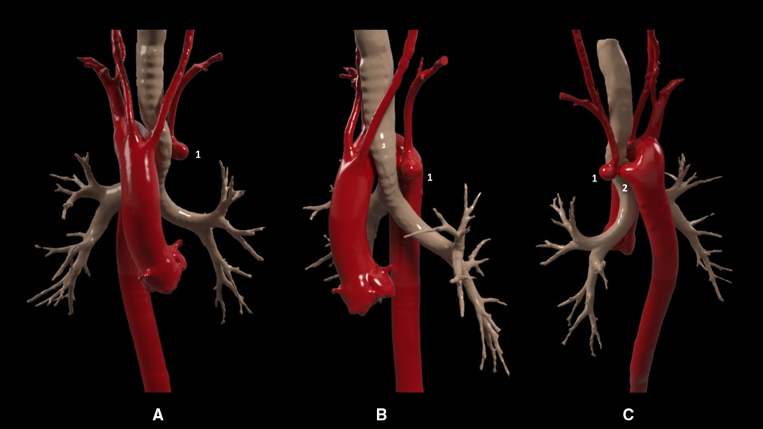
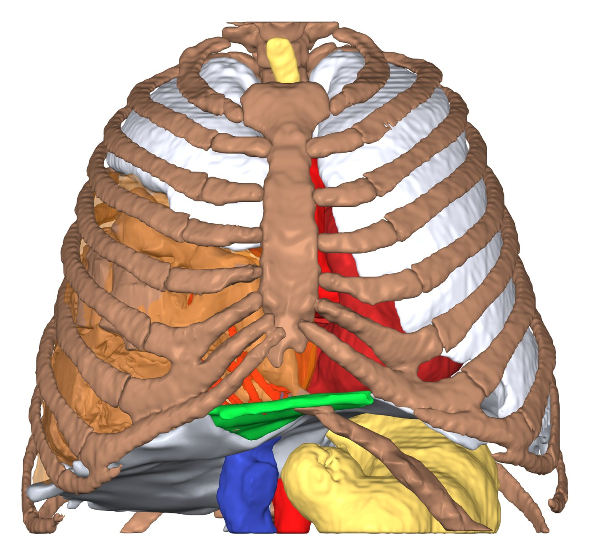

Productes sanitaris a mida
Planificació Quirúrgica Virtual
Models anatòmics virtuals i impresos per a planificació quirúrgica, fabricats com a productes sanitaris a mida sota la llicència FMP009CAT.
Cirurgies planificades
Un exemple per especialitat

També fabriquem
- Models anatòmics impresos
- Guies quirúrgiques no estèrils · de tall i posicionament
- Òrtesis per a pacients atesos a l'hospital
Tecnologia
- FDMBambu LabFilament fos · termoplàstics
- SLAFormlabs Form 4Resina curada per llum, capa a capa
- SLSFormlabs Fuse 1Pols de niló sinteritzada per làser
- CADMaterialise Mimics · 3-matic